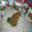

ATD Scan Report
Vulnerability Report created by ATD (Adversarial Threat Detector).
Executive Summary
Weak
Your classifier is vulnerable to Evasion Attacks. An adversary can input an Adversarial Examples into your classifier and cause it to misclassify into the class intended by the adversary.
Scanned result
Target Information
Basic information about the target model.
| Model path | /home/itakaesu/PycharmProjects/Adversarial-Threat-Detector/targets/model.h5 |
|---|---|
| Dataset | /home/itakaesu/PycharmProjects/Adversarial-Threat-Detector/targets/X_test.npz |
| Dataset num | 100 |
| Inference accuracy | 92.0% |
Dataset samples
Samples of Dataset.


Summary
Scan result's list.
| # | Attack Type | Consequence | Summary |
|---|---|---|---|
| 1 | Data Poisoning | N/A | Not scan. |
| 2 | Model Poisoning | N/A | Not scan. |
| 3 | Evasion | Weak | Your classifier is vulnerable to Evasion Attacks. An adversary can input an Adversarial Examples into your classifier and cause it to misclassify into the class intended by the adversary. |
| 4 | Exfiltration | N/A | Not scan. |
Vulnerability detail
This is the detail information for developer.
Please take countermeasures based on the following vulnerability information.
Evasion
The Evasion Attack is an attack that causes the target classifier to misclassify the Adversarial Examples into the class intended by the adversary.
The adversary perturbs the input data to the classifier to create a Adversarial Examples. If the adversary inputs the Adversarial Examples to the target classifier, then the target classifier misclassify it into the class intended by the adversary.
Fast Gradient Sign Method (FGSM)
FGSM uses the gradient of the target classifier to create Adversarial Examples. In the case of images, FGSM uses the gradient of the loss function for the input image and adds perturbations into the image to maximize the loss.
- Scan Date : 2021/02/15 07:49:23
- Consequence : Weak (Benign=92.0%, AEs=42.0%)
- Replay's ipynb : /home/itakaesu/PycharmProjects/Adversarial-Threat-Detector/reports/../reports/20210215074917_scan/evasion_fgsm.ipynb
- Countermeasure :
Adversarial Examples


- 
- AEs Path : /home/itakaesu/PycharmProjects/Adversarial-Threat-Detector/reports/../reports/20210215074917_scan/adv_fgsm.npz